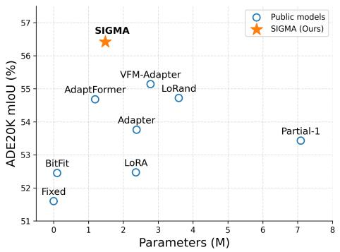

Figureure 2 · : Overview of the proposed SIGMA tuning frameworkFig. 2: Overview of the proposed SIGMA tuning framework. Left: We add SIGMA layer after MHA and FFN in each Transformer block. The proposed method freezes the parameters of the original pre-trained layers and only updates the parameters within SIGMA layer. Right: The details of SIGMA layer. The process begins with LayerNorm and down-projection. Multi-scale and aggregation filters then sequentially process the features, while a Semantic Modulation module concurrently generates scale and shift signals to modulate these filters. The output is then processed with an activation function and up-projection to the original space. Four residual connections are included to improve adaptability.这张图概括 SIGMA 的整体方法流程。阅读时先看模块之间传递的训练信号，再看作者如何把目标拆成可优化的子问题。

Figureure 1 · : Comparison of our method with other tuning methods on representativeFig. 1: Comparison of our method with other tuning methods on representative visual tasks. SIGMA (orange star) significantly outperforms existing PEFT methods, achieving state-of-the-art performance with only 1.48M trainable parameters.这张图/表用于判断 SIGMA 的实验收益来自哪里。重点看替换、消融或跨模型设置下趋势是否一致，而不是只看单个最高分。